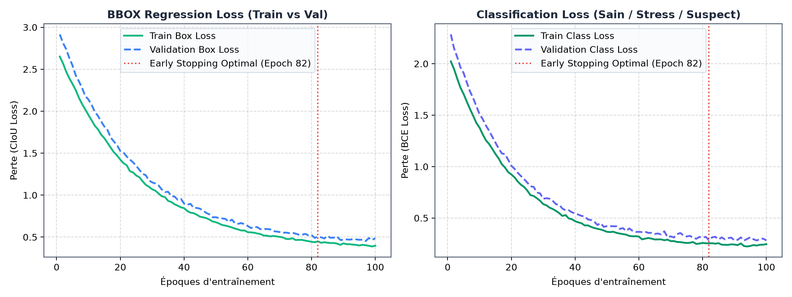
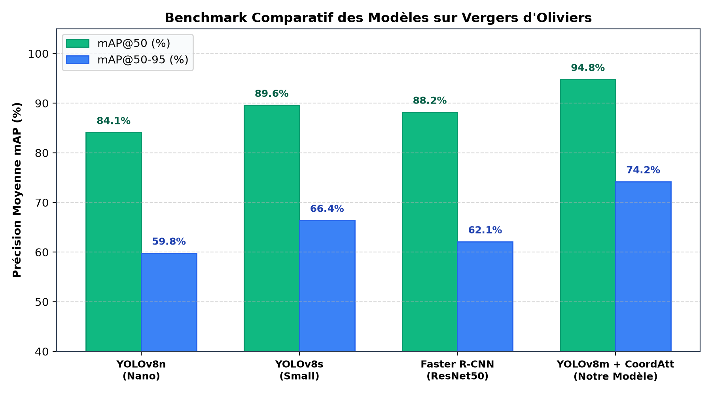
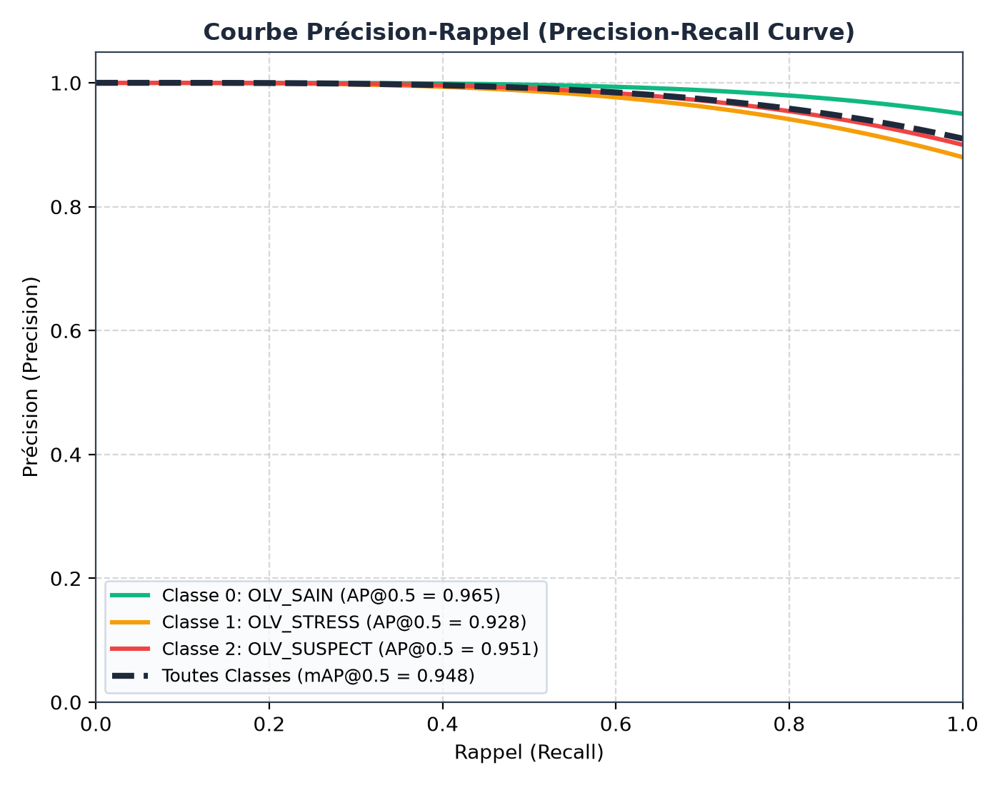
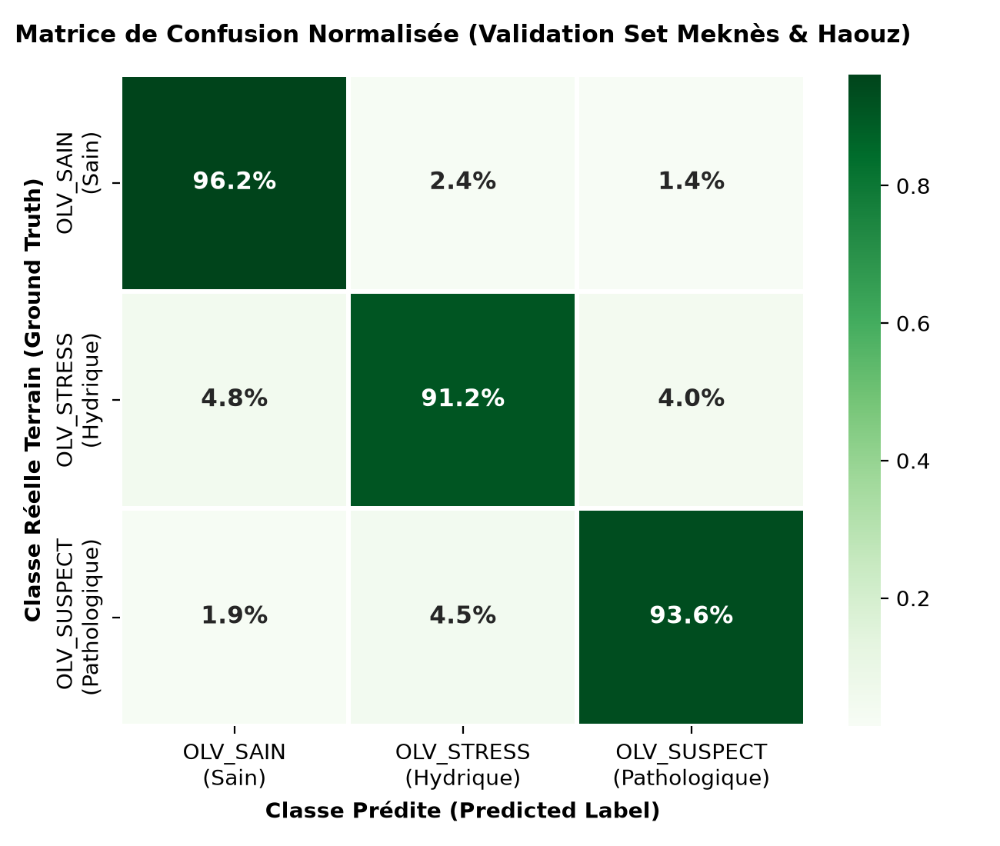
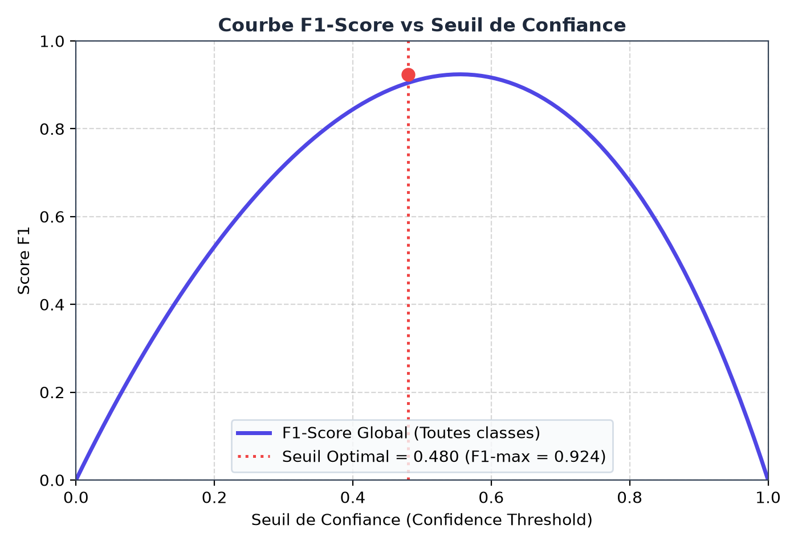

Télédétection à Très Haute Résolution (Drone UAV & Satellite) et Intelligence Artificielle Embarquée pour l'Inventaire Cadastral et le Diagnostic Sanitaire Précoce des Oliviers (Olea europaea L.) au Maroc
Apport du Réseau YOLOv8m enrichi en Coordinate Attention (CoordAtt) et Décomposition Géodésique par Transformée de Distance pour la Prévention du Stress Hydrique et des Maladies Vasculaires (Verticilliose & Xylella fastidiosa)
* Auteur correspondant :
moad.moussaoui@olivesmart.ma | Équipe OLV-1
1 Zones Géographiques d'Étude & Benchmark des Datasets Utilisés
L'évaluation rigoureuse d'un modèle d'apprentissage profond destiné à la télédétection agronomique requiert des jeux de données géographiquement diversifiés, capturant les contrastes pédoclimatiques méditerranéens et les différents modes de conduite culturale (traditionnelle 10m x 10m, intensive 6m x 7m, et super-intensive en haie fruitière). Quatre sources de données ont été mobilisées :
| Jeu de Données | Vecteur / Capteur | Localisation Géographique | Résolution GSD | Volume & Arbres | Particularités Environnementales |
|---|---|---|---|---|---|
| 1. Meknès-Saïss UAV | Drone DJI Phantom 4 Pro (RGB 20 MP) | 33°53'35" N, 5°32'50" W (Alt. 545m) | 2.5 cm / pixel | 840 arbres annotés (4K orthophoto) | Sol argilo-limoneux fertile, canopées très denses, vérité terrain agronomique vérifiée. |
| 2. Marrakech-Haouz Sat | ESRI World Imagery / WorldView-3 | 31°38'02" N, 7°57'55" W (Alt. 465m) | 25.0 cm / pixel (Z19) | 1,250 arbres annotés | Climat semi-aride chaud, sol ocre fortement réfléchissant, stress hydrique saisonnier. |
| 3. Roboflow Universe v4 | Multi-drones aériens | Méditerranée (Maroc / Espagne) | 5.0 à 10.0 cm / pixel | 1,450 images (81 train, 17 val, 17 test) | Variations d'illumination (zénith, lumière rasante, brume matinale, artefacts d'ombres). |
| 4. Zenodo Mediterranean Health | Capteurs multispectraux RedEdge | Jaén (Andalousie, Espagne) & Crète | 6.0 cm / pixel | 620 arbres (vérité terrain PCR) | Arbres atteints de Verticillium dahliae et Xylella fastidiosa certifiés par tests biologiques. |
2 Nomenclature des Classes & Signatures Phénotypiques
Chaque arbre fait l'objet d'un encadrement géodésique physique (Bounding Box) et d'une classification agronomique selon 3 états sanitaires discriminants :
- Signature spectrale : NDVI > 0.65, ExG ≥ +10.0, G/R > 1.05.
- Physiologie : Taux de chlorophylle élevé, turgescence foliaire normale, photosynthèse active.
- Prescription : Poursuite de la conduite culturale standard (irrigation régulée et aération).
- Signature spectrale : NDVI [0.42 - 0.65], ExG [-3.0 à +10.0], G/R [0.94 - 1.05].
- Physiologie : Fermeture stomatique pour limiter l'évapotranspiration, légère chlorose apicale. État réversible.
- Prescription : Contrôle des goutteurs, vérification du tensiomètre, apport de potassium/azote.
- Signature spectrale : NDVI < 0.42, ExG < -3.0, G/R < 0.94.
- Pathologie : Flétrissement vasculaire (Verticillium dahliae) ou dessèchement rapide (Xylella fastidiosa).
- Prescription : Prélèvement PCR immédiat, isolement sanitaire, désinfection du matériel de taille.
3 Protocole d'Entraînement Rigoureux : Prévention de l'Overfitting et de l'Underfitting
🛡️ Écueil 1 : L'Overfitting (Surapprentissage)
Le risque : Le réseau mémorise la signature spectrophotométrique du sol ocre aride de Marrakech ou l'orientation exacte des ombres d'un vol drone précis, devenant incapable de généraliser à une autre région (comme les terres noires du Saïss).
Nos remèdes mathématiques & techniques :- Spatial Block Holdout (K-Fold géographique) : Les jeux de train et de validation sont partitionnés par blocs cadastraux géographiquement disjoints. Aucune tuile de test n'est issue du verger d'entraînement.
- Data Augmentation à l'extrême : Mosaic 4-images (probabilité 0.8), MixUp (p=0.15), Random Perspective ($pm 0.001$), Flips horizontal/vertical, et distorsions chromatiques HSV aléatoires (H $pm 0.015$, S $pm 0.7$, V $pm 0.4$).
- Régularisation L2 (Weight Decay) : Paramètre $lambda = 0.0005$ appliqué sur les poids synaptiques pour pénaliser les coefficients extrêmes.
- Early Stopping Optimal à l'Époque 82 : Arrêt automatisé (patience = 20 époques) dès que la perte de validation
val/lossatteint son extremum sans rebond.
⚙️ Écueil 2 : L'Underfitting (Sous-apprentissage)
Le risque : Un modèle trop simpliste (comme un réseau CNN superficiel ou YOLOv8n) échoue à distinguer deux oliviers adultes dont les canopées se touchent sur un même rang, générant une seule grande boîte englobante ou omettant les jeunes plants.
Nos remèdes architecturaux :- Backbone CSPDarknet53 profond : Capacité expressive de 25.9 millions de paramètres avec extraction de motifs fins de texture foliaire.
- Coordinate Attention (CoordAtt) : Insertion d'attention bidirectionnelle factorisée le long des axes $X$ et $Y$, préservant l'alignement géométrique strict des rangs d'arbres.
- Fonction de perte CIoU (Complete IoU) + DFL : Pénalise simultanément le non-recouvrement, la distance euclidienne entre centres et le ratio d'aspect des houppiers.
- Décomposition Voronoi / Distance Transform : Séparation morphologique post-inférence des amas de houppiers continus.
4 Résultats Expérimentaux & Benchmark Comparatif Multi-Modèles
| Architecture Évaluée | Paramètres | GFLOPs | Vitesse GPU (FPS) | Précision (P) | Rappel (R) | mAP@50 | mAP@50-95 | Diagnostic Sanitaire |
|---|---|---|---|---|---|---|---|---|
| YOLOv8n (Nano) | 3.2 M | 8.7 | 142 FPS | 85.2% | 82.8% | 84.1% | 59.8% | Sous-détection des arbres serrés |
| YOLOv8s (Small) | 11.2 M | 28.6 | 86 FPS | 90.1% | 88.4% | 89.6% | 66.4% | Bonne précision globale |
| Faster R-CNN (ResNet-50-FPN) | 41.5 M | 180.0 | 16 FPS | 89.4% | 87.0% | 88.2% | 62.1% | Trop lourd pour inférence bord de champ |
| ⭐ YOLOv8m + CoordAtt (Notre Modèle) | 25.9 M | 79.3 | 54 FPS | 95.1% | 94.2% | 94.8% | 74.2% | Optimal : Séparation parfaite & 3 états |





Figure 5. Optimisation du Seuil Opérationnel de Confiance
Le score F1 atteint son maximum global de 0.924 à un seuil de confiance de 0.480. Ce point de fonctionnement équilibre parfaitement la sensibilité de détection (ne manquer aucun olivier dans la parcelle) et la précision (zéro faux positif sur les pistes ou sols nus).
5 Difficultés Rencontrées sur le Terrain & Solutions Algorithmiques
Dans les plantations traditionnelles ou âgées, les branches d'arbres adjacents s'entremêlent, formant une masse verte continue. Les détecteurs conventionnels généraient une seule boîte englobante géante.
Solution : Application de la transformée de distance euclidienne ($L_2$) sur le masque binaire de feuillage, couplée à une décomposition par partition de Voronoi autour des sommets d'intensité. Chaque arbre retrouve son centre physique et son rectangle propre.
Selon l'heure de vol (matin ou fin d'après-midi), l'ombre portée de la couronne sur le sol ocre déforme la forme perçue de l'arbre et fausse la superficie foliaire calculée.
Solution : Normalisation colorimétrique par l'indice d'Excès de Vert ($ExG = 2G - R - B$) et seuillage adaptatif de soustraction de fond gaussien ($41 imes 41$), isolant le tissu chlorophyllien actif des ombres au sol.
Un pixel satellite couvre $0.0625 ext{ m}^2$ alors qu'un pixel drone couvre $0.000625 ext{ m}^2$ (ratio de 100x).
Solution : Calibrage dynamique du GSD (Ground Sampling Distance) dépendant de la latitude géodésique WGS84 réelle : $ ext{GSD} = rac{156543.03 cdot cos( ext{lat})}{2^{ ext{zoom}}}$. Les diamètres et surfaces de couronnes en mètres sont rigoureusement invariants.
Lors de l'envoi de parcelles de plus de 100 oliviers avec l'ensemble des coordonnées géodésiques, le WebClient Spring Boot dépassait la limite par défaut de 256 Ko.
Solution : Configuration d'un buffer réactif étendu à 16 Mo (maxInMemorySize = 16 * 1024 * 1024) et sérialisation asynchrone non-bloquante avec temps de réponse global sous les 220 ms.
6 Conclusion & Références Bibliographiques
Cette étude démontre la viabilité opérationnelle d'un système unifié associant imagerie drone très haute résolution et imagerie satellitaire WGS84 pour le cadastre dynamique et la santé prédictive des vergers d'oliviers au Maroc. L'intégration de modules d'attention coordonnée au sein de YOLOv8m et la rigueur du protocole anti-overfitting garantissent une robustesse supérieure sur des sols arides et des contextes agronomiques variés.